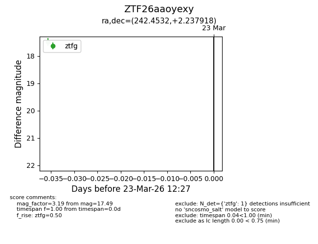
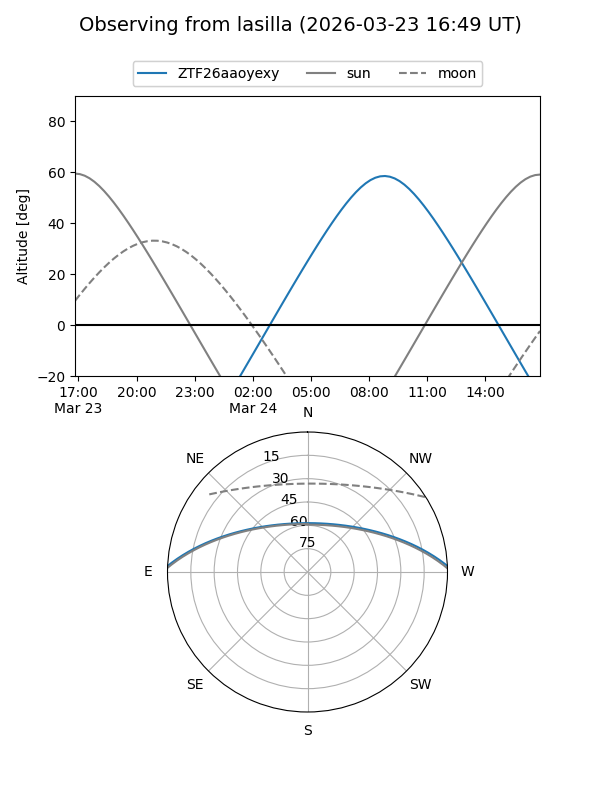
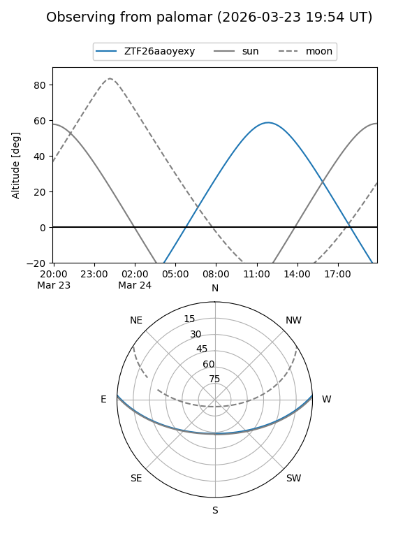

ZTF26aaoyexy
Target ZTF26aaoyexy at 2026-03-23 12:29
Aliases and brokers:
FINK: link
Lasair: link
ALeRCE: link
alt names
ZTF26aaoyexy (ztf,fink_ztf)
Coordinates:
equatorial (ra, dec) = 242.4532,+2.23792
equatorial (HMS+DMS) = 16:09:48.76,+02:14:16.51
galactic (l, b) = (14.0264,+36.45985)
Flags:
Photometry:
last ztfg=17.49
1 ztfg detections
Lightcurve

Visibility


Additional plots